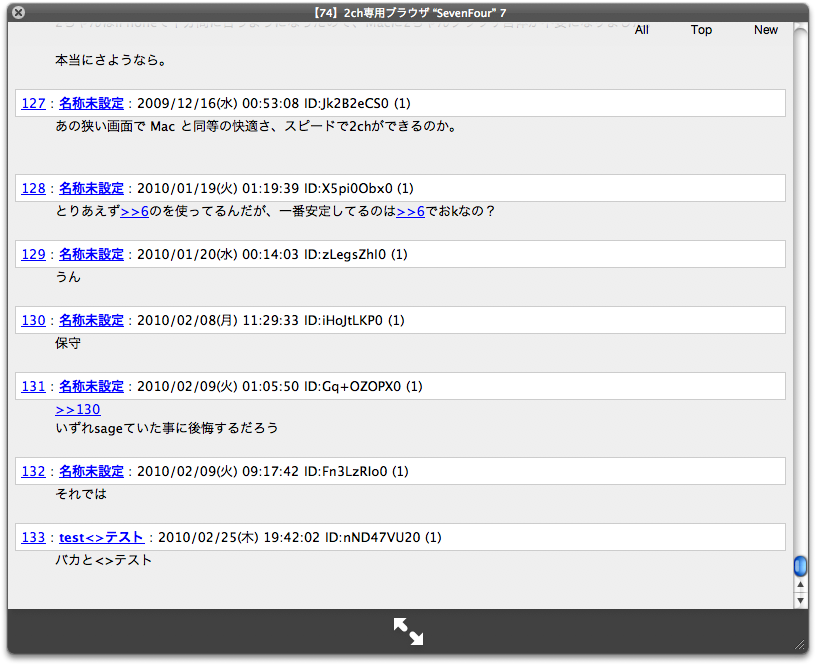
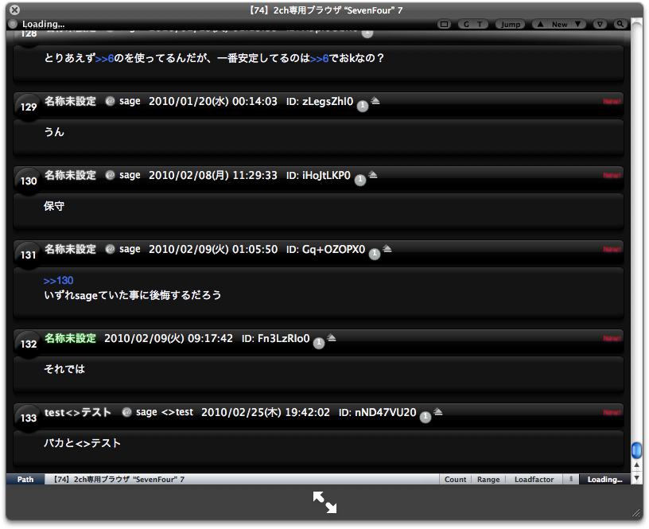
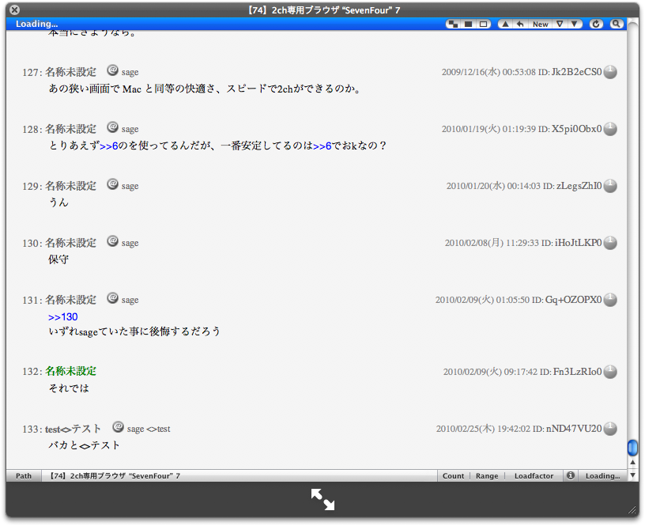
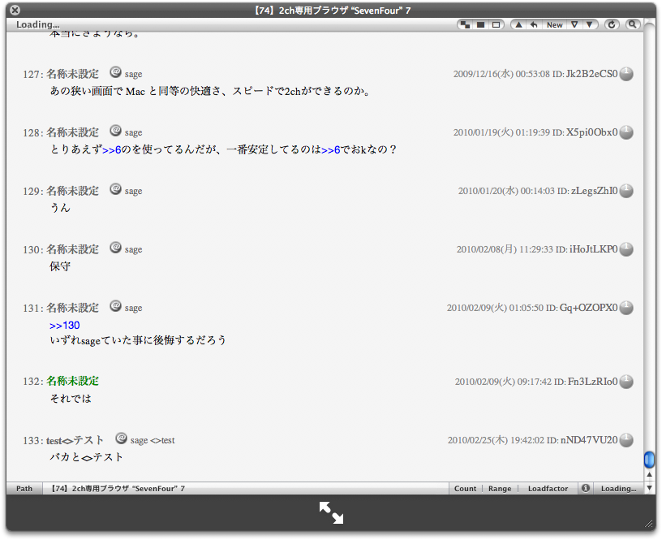
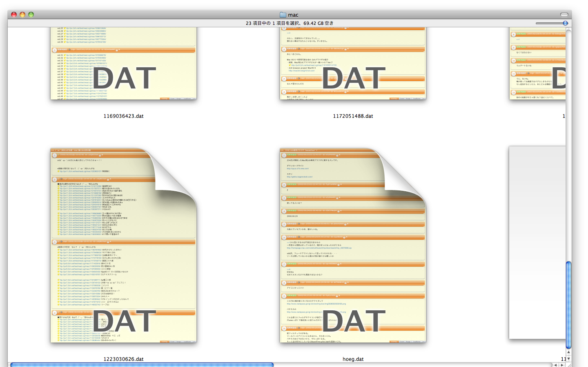
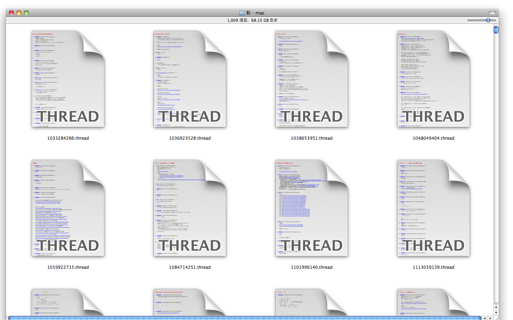

プレビュー
SevenFour スキンを利用してログファイルの表示をカスタマイズできます。
例えばGekkoさんがSevenFour 用に作成されたスキンも使用できます。
具体的な使用方法はreadmeファイルを参照してください。
スクリーンショット

デフォルトスキン

Blackスキン

Graphiteスキン

Platinumスキン
サムネールの表示に対応!


Mac OS X 10.6 Snow Leopard から datファイルとthreadファイルのサムネール表示に対応しました。
スクリーンキャスト
dat.qlgenerator Sneak Preview
dat.qlgenerator Cover Flow